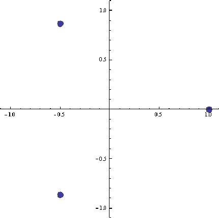
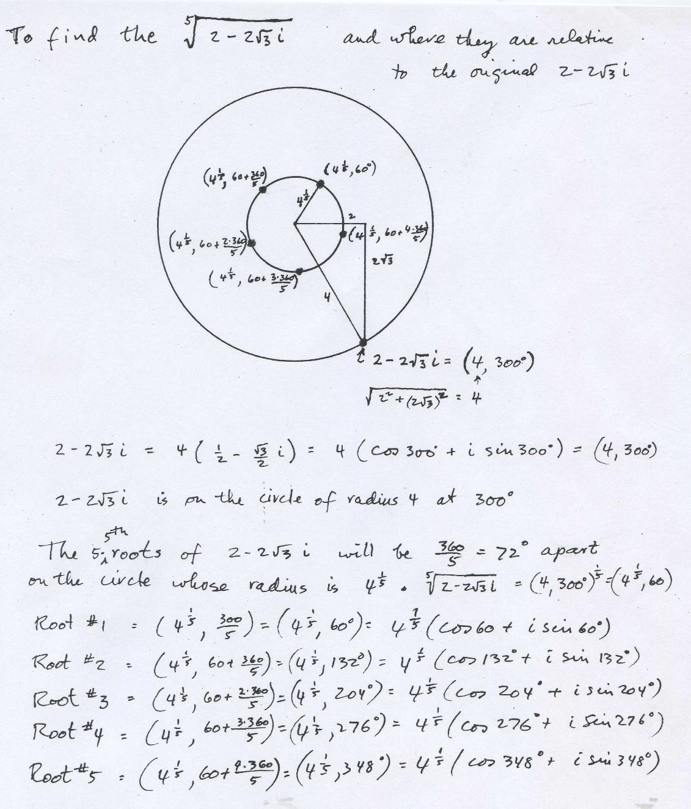

Finding & graphing the cube roots of 1, or solving the equation x3=1, using Mathematica
NSolve[x^3'1,x]
{{x' -0.5 - 0.866025 '},{x' -0.5 +0.866025 '},{x'1.}}
{{x->Cos[4*p/3] + '*Sin[4*p/3]},{x->Cos[2*p/3] + '*Sin[2*p/3]},x->Cos[0*p/3] + '*Sin[0*p/3]}
{{x->{x' '^('*4*p/3)},{x' '^('*2*p/3),{x' '^('*0*p/3)}}
Note: '^('*4*p/3) = -0.5 - 0.866025 ' because, '^('x) = cos x + ' sin x
(see binomial expansion to get eix )
ListPlot[Map[{Re[#],Im[#]}&,x/.Solve[x^3'1]],PlotRange'1.1,AspectRatio'Automatic,
PlotStyle'PointSize[0.03]]

Notice the solutions are on a circle of radius 1, 120o apart.
Solve: x5 = 2 - 2*'*Sqrt(3) or find the 5 - fifth roots of 2 - 2*'*Sqrt(3)

See also points on the spiral (1+i)n